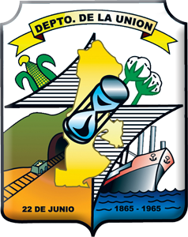

- Extensión territorial: Cextensión territorial es de 1,447 kilómetros cuadrados.
- Idioma: Español
- Alcalde: Ezequiel Milla
- Poblacion: 18,046 habitantes
- Fiestas patronales: Arambala, del 23 al 25 de agosto, en honor de San Bartolomé.
- Productos artesanales: La Unión: Confitería, floristería, tejidos de nailon, adornos marinos, cerería, pirotécnica, carpintería, hojalatería, orfebrería.
- Sitios turísticos: 1.Golfo de Fonseca
2.Playas de El Tamarindo
- Mapa
- Santa Ana
- Sonsonate
- Usulutan
- Ahuchapan
- San Miguel
- Morazan
- La Union
- La Libertad
- Chalatenango
- Cuscatlan
- San Salvador
- La Paz
- Cabañas
- San Vicente